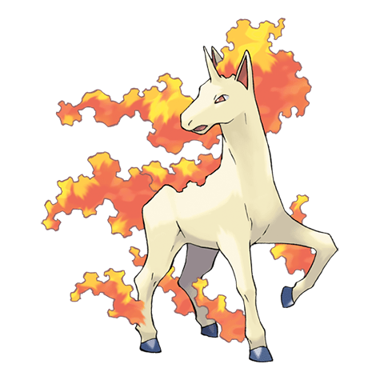

Назад
Рапидаш

Рапидаш — Покемон 1 поколения под номером 78 в Покедекс. Обитает он в регионе Канто и относится к Огненому типу. Это последняя стадия превращения Покемона Понита. Рапидаша обычно можно увидеть бегающим по полям и равнинам. В серьёзных ситуациях его пламенная грива вспыхивает ярче прежнего. Будучи в пылающем состоянии, этот Покемон может скакать со скоростью 250 км/ч.
Тип:
Огненый
Эволюция
# 078 Рапидаш
Финальная стадия